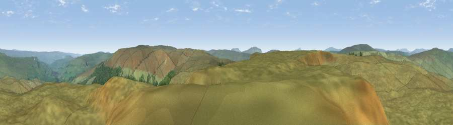

Viewpoint c9665_7763
#10577 in England · top 24% of its area beats it · —Where it is
The exact computed spot (SD 88175 83275). Click the marker for map links.
The view, rendered

A 360° render of this exact spot computed from the terrain model, tree cover and land cover — summer colours, afternoon light, calibrated against photographs of famous viewpoints. Real trees, hedges and buildings will differ in detail.
The panorama
Grey silhouette: terrain skyline in each direction (720 bearings, Earth curvature and refraction included). Dashed green: skyline with trees (+15 m) and buildings (+8 m) as obstacles. Blue strip: how far the ground is visible on each bearing.
Where the view opens
Wedge length = distance to the farthest visible ground on that bearing (vegetation-aware). Rings at 10, 25 and 50 km.
What fills the view
97% grassland · 3% woodland
Angular shares of the visible panorama (visual magnitude), not map area. Landscape diversity 0.06 (0–1 Shannon).
Key numbers
More beautiful places nearby
The staircase of upgrades: each row has a higher view potential than everything closer. Driving times are estimates from straight-line distance, calibrated against real road routing — check an actual route before setting out.
| Place | Direction | Drive | Score |
|---|---|---|---|
| Viewpoint c9662_7809 | E · 2 km | ~6 min | 69.4 |
| Drumaldrace | NNW · 4 km | ~8 min | 70.9 |
| Viewpoint near Gayle | WNW · 4 km | ~10 min | 73.6 |
| Viewpoint near Buckden | ESE · 9 km | ~18 min | 77.3 |
| Whernside | W · 14 km | ~26 min | 79.9 |
| Warton Crag | WSW · 40 km | ~60 min | 83.2 |
| Viewpoint near Grange-over-Sands | W · 49 km | ~70 min | 83.4 |
| Viewpoint near Finsthwaite | W · 49 km | ~70 min | 90.3 |
54.24503, -2.18296 · source: screening · position refined by local search. Computed location — check access rights before visiting.